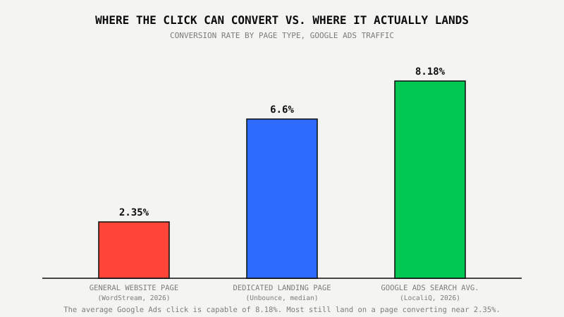
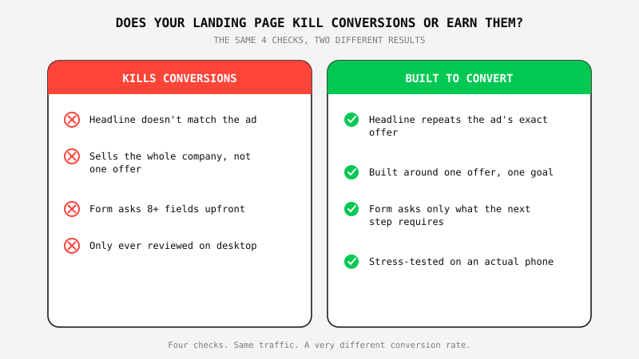

Why Most Landing Pages Kill Your Google Ads Performance

Key Takeaways
- The average Google Ads search campaign converts at 8.18% (LocaliQ, 2026), but a general website page averages just 2.35% (WordStream, 2026), and the median dedicated landing page converts at 6.6% (Unbounce Conversion Benchmark Report, 41,000 pages, 464 million visitors). Most Google Ads traffic still lands on the wrong page type.
- Desktop landing pages convert 8% better than mobile on average (Unbounce), yet most Google Ads clicks are mobile and most landing pages are still built and tested desktop-first.
- A landing page that doesn't repeat the ad's exact promise loses the click before the offer gets read. Message match is the first fix, not the creative.
- Conversion rate alone doesn't predict revenue. One real GoViral-managed account converts at just 1.85% and stays profitable at a controlled $264 cost per conversion, because the page and the offer's economics were built to match each other.
- Raising bids to force more conversions out of a broken landing page almost always costs more than fixing the page itself.
Remember The Restaurant With A Line Out The Door And Empty Tables Inside?
Every city has one. A packed sidewalk on a Friday night, a wait that stretches past an hour, and half the dining room sitting empty because the host never caught up, or the menu takes ten minutes to explain to a table that just wants to order. The demand was real. It never made it past the door.
A Google Ads account can look exactly like that host stand. The keywords are right. The bids are competitive. The click happens, on budget, on target. Then the visitor lands on a page that doesn't say what the ad said, or asks for eight fields before it mentions the price, or takes three extra seconds to load on a phone standing in a parking lot. The traffic was never the problem. The door was.
1. The Page Doesn't Match What the Ad Promised
A landing page that doesn't repeat the ad's exact promise, in the same words, in the first few seconds, loses the visitor before they've read a single line of the offer. A visitor who just clicked is checking whether they landed in the right place, not reading a pitch yet.
Our own Google Ads Proof Program™ page leads with the exact number from the ad, $600, not a generic headline about growth, because message match is something you can measure, not a nice-to-have. If the ad says $600, the headline says $600. If the ad says "first month," the headline says "first month." Anything less specific and the visitor's first instinct is to double-check they're in the right place, and a lot of them don't bother finishing that check.
2. The Page Was Built for Everyone Instead of the One Click That Just Landed
A page trying to explain a company's entire service list to every visitor converts worse than a page built for the single offer that single ad promised, because a visitor who just clicked doesn't need context. They need confirmation.
The gap shows up directly in the data. WordStream's broader 2026 dataset, which includes general website pages, homepages, service pages, product pages, puts the average conversion rate at 2.35%. Unbounce's Conversion Benchmark Report, covering 41,000 dedicated landing pages and 464 million visitors, puts the median for pages built around one offer at 6.6%, nearly three times higher. Same traffic quality. Different page, different result.

3. The Form Asks For More Than the Click Has Earned
A form that asks for more information before it explains what happens next loses visitors who haven't earned enough trust yet to hand it over, and two seconds off an ad click is rarely enough trust for eight fields.
The fix isn't complicated. Ask for what the very next step actually requires: name, and email or phone, nothing else. Push qualifying questions, budget, timeline, company size, to the call that comes after, not the form that comes before it. Every field beyond that is a small tax on a visitor who was already on the fence.
4. Nobody Actually Tested the Mobile Version
Desktop landing pages convert 8% better than mobile on average, per Unbounce's Conversion Benchmark Report, and most Google Ads accounts still send the majority of their clicks to a page that was designed on a widescreen monitor and never stress-tested on a phone.
Tap targets sized for a mouse cursor. Forms that force zooming to read. A hero image that pushes the actual offer below the fold on a six-inch screen. None of that shows up when someone reviews the page on a laptop. All of it shows up the moment a real visitor taps in from a Google Ads click on their phone, which is where most of the clicks already are.

5. Conversion Rate Alone Doesn't Tell You If the Page Is Actually Working
A high conversion rate on its own doesn't prove a landing page is working, and a low one doesn't prove it's broken. What matters is whether the page and the offer's economics were built to match each other.
We wrote about this from the account side in The 5 Google Ads Metrics That Actually Predict Revenue. One real GoViral-managed account converts at just 1.85%, well below both the 6.6% landing page median and the 8.18% Google Ads average, and it's still one of the most profitable accounts on the roster. It runs at a controlled $264 per conversion because the deal size behind each conversion covers it several times over. A landing page audit that only asks "is the conversion rate high enough" misses that entirely. The real question is whether the page is losing visitors for a fixable reason, message match, form friction, an untested mobile experience, not whether the percentage looks impressive on a slide.
What Smart Businesses Are Doing About It
They stop treating the landing page as a formality after the campaign is built and start treating it as half the campaign. Message match gets checked against the actual ad copy, not the brand guidelines. Forms get cut down to what the next step requires. Mobile gets tested on an actual phone, not resized in a browser window. And the conversion rate gets read next to the offer's real economics, not against a generic industry number.
That's why landing page recommendations are part of the first month of every Google Ads Proof Program™ engagement, before we touch a single bid.
Not sure if your account has a campaign problem or a landing page problem? We'll tell you, free.
See The $600 Google Ads Proof Program™ ↗